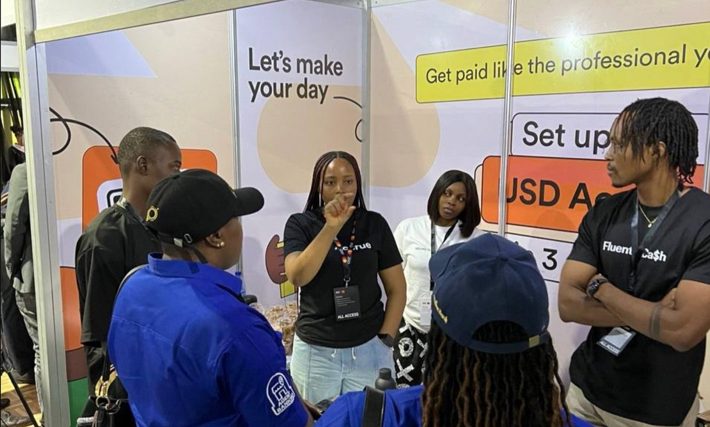

Disappointments sometimes lead to beautiful places.

I’ve been thinking a lot about disappointment lately.
When you’re building a company (or anything for that matter), disappointment starts to feel like a constant companion; daily, there’s always something that’s not going according to plan. But the funny thing is that when I look back, many of the beautiful places in my life only opened up because something didn’t work out the way I wanted.
I’ve been thinking about some disappointments in building Accrue that have led to beautiful places, and I thought to share a few.
When I was chasing product management because everybody else was
I remember those months before finishing uni. Everyone and their cousin wanted to be a product manager. It was almost like tech had one door, and that door was PM. So me too, I said okay, maybe that’s what I should be doing.
I applied to Helicarrier for a product management role. They replied and said the PM role wasn’t available. What they had was customer support, and I remember feeling a small sting when I read it.
I felt disappointed. I thought customer support was an “inferior” role. I didn’t know any better. I didn’t understand how much of a backbone it is for any consumer-facing company. But at that point, I was earning 18k as a teacher, so please, disappointment or not, I took it.
Looking back, that tiny detour helped me realize I didn’t want to be a PM. I didn’t even like it. It was also where I met Zino, who was the support team lead. We became friends, and one day he started telling me about an idea he had—a simple dollar-cost-averaging app to help beginners invest in crypto and stocks. That was the seed that eventually became Accrue.
Things might have gone differently if I had gotten the PM role. I may even have been fired because I’d have discovered on the job that I didn’t like it.
Nigeria humbled us
Following the pivot to dollar savings, people weren’t downloading the app as we’d hoped. And after talking to a number of people, it turned out some were wondering why they should trust us over the bigger, more popular players, solving the (dollar) savings problem.
We were running out of money, so we couldn’t even do any proper PR or marketing to ‘prove ourselves.’
So we looked elsewhere.
My other co-founder, Clinton, was in Ghana, and the ecosystem there wasn’t as crowded. So we launched there, and Ghanaians welcomed us with open arms. We even hit number one on the Play Store for fintech apps multiple times. Ghana became our first real home.
If Nigeria had worked out initially, I don’t think we would have expanded to Ghana that quickly. It was also a Ghanaian user who made us realise what our next pivot should be.
A simple limitation forced us to build something bigger
When we first launched in Ghana, people could only deposit through crypto. Many didn’t have stablecoins, and they didn’t even know how to get them. That friction frustrated everyone; we’d often get messages from Ghanaians saying they wanted to use the app but didn’t know how to get money in.
So we built Cashramp, an agent network that made it easy for people to deposit cedis. Users brought in their cedis, agents handled the crypto conversion quietly in the background, and everything just worked. It worked so well that the same system was what a woman used to send money from Ghana to Nigeria. That one moment made us realise we weren’t just fixing deposits. We were actually building cross-border payment infrastructure.
Today, more than 16,000 agents have signed up to Cashramp. It grew from 4% of our revenue to more than 70% in seven months. Some agents make up to $500 a month from processing transactions.
And none of it was planned. It all grew out of a limitation that initially just annoyed us.
The visa we never got
There was an accelerator in South Africa we got into — I remember feeling so relieved that all we needed to do was get our visas, travel, and the company won’t die. We applied, we tried to get visas, we pushed from every angle, but nothing worked, so we had to drop out of the program. And at the same time, investors were giving us one “no” after another.
That period pushed us into a different kind of mindset. We stopped waiting for someone to save us and started telling ourselves, “Since nobody is giving us money, let’s actually become a business that makes money as is profitable.”
It took us a while to get there, but becoming ramen profitable ended up being one of the most peaceful days of my founder life. Of course, it wasn’t the finish line, but it was the first time I genuinely felt like we could breathe.
That season of chasing ramen profitability instilled in us the mindset that our unit economics should always make sense, so we build something that feels more like a business than a passion project — a mindset that still shapes how we build today.
Building anything can be lonely, chaotic, and confusing. And sometimes it feels like all you need to do to experience your next roadblock is open your eyes in the morning.
Every time something doesn’t go as planned (which happens more often than not), I try to remember the old disappointments; the ones that pushed me into places I didn’t know I needed, the ones that quietly redirected my life, the ones I once cried about but now laugh at.
Not every disappointment becomes something beautiful.
Some just hurt.
Some lead nowhere.
But some of them lead to beautiful places.
And those ones are enough to keep hope alive.